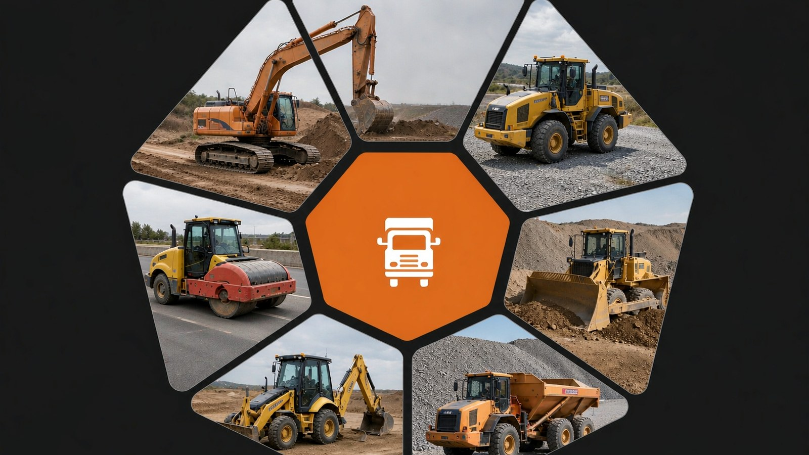

01 / 多品牌多机型兼容
品牌各说各话，接口这一层把它们说成同一种语言
针对不同品牌设备在电控协议、液压回路、操作逻辑上的差异化特征，天远采用通用化改装套件作为适配中间层，将品牌特异性差异在接口端完成兼容转换，保障驾驶端操作逻辑的一致性。对小松、卡特彼勒、沃尔沃、日立、神钢这些欧美日韩机型，以及临工、柳工、三一、徐工等国产设备，改装套件按机型预置参数模板，接入后先做信号对标，再交付操作员使用。换品牌、换吨位，操作台上的手柄行程、按键布局与画面结构保持不变，机手不必重新建立肌肉记忆，机队越杂，这套方案的价值越明显。
- 覆盖 50 + 主流机型，挖掘机、装载机、推土机、矿卡等全品类通用。
- 标准接口加装，不改动原车液压与结构，改造周期短。
- 存量设备无损升级，支持跨品牌复用。